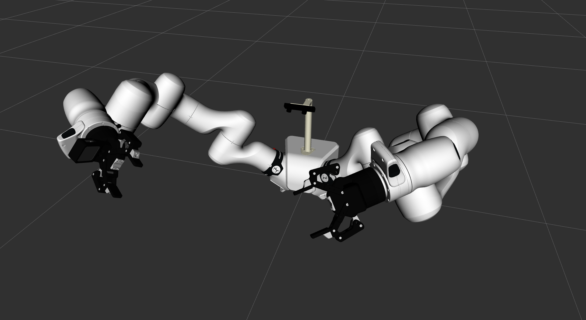
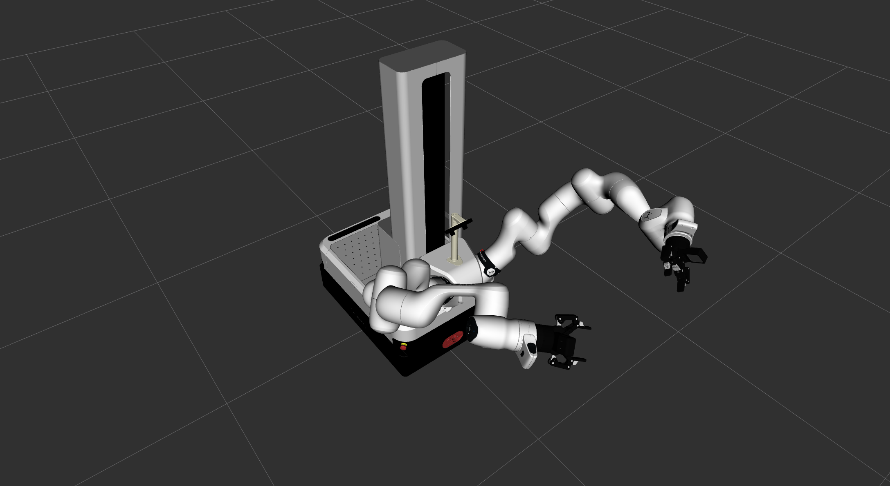

franka_vision_and_manipulation_kit
Package Overview
This package containes launch files and URDF for the Franka Vision and Manipulation Kit.
Robotiq Grippers - Robotiq 2F-5 Grippers
Realsense Cameras - RealSense D405 Depth Cameras
ZED Camera - ZED Mini Camera
The package handles sensor configuration, driver launching, and RViz visualization for the complete kit.


Prerequisites
The following repositories are needed for the Franka Vision and Manipulation Kit to work:
Currently, franka_ros2 does not provide a pre-built docker image or other environment where these prerequisites are already installed.
Please build your own evironment with the help of above links.
The ZED package needs CUDA Drivers and the ZED SDK.
Usage
Launch the kit with:
ros2 launch franka_vision_and_manipulation_kit franka_vision_and_manipulation_kit.launch.py \
[start_robotiq_grippers:=true|false] \
[start_realsense_cameras:=true|false] \
[start_zed_camera:=true|false] \
[start_rviz:=true|false] \
[use_mobile_platform:=true|false] \
[config_file_path:=<path to config file>]
Launch Arguments
start_robotiq_grippers(default:true) - Start Robotiq grippersstart_realsense_cameras(default:true) - Start RealSense camera driversstart_zed_camera(default:false) - Start ZED camerastart_rviz(default:true) - Start RViz visualizationuse_mobile_platform(default:false) - Use mobile FR3 Duo instead of stationary FR3 Duoconfig_file_path(default:package://franka_vision_and_manipulation_kit/config/default_config.yaml) - config file with contains camera parameters etc.
Configuration
Example configuration YAML file:
head: #parameters for zed camera
camera_model: zedm
# more zed camera parameters, see https://www.stereolabs.com/docs/ros2/zed-node
left_arm:
gripper:
type: 2f_85 # by default the vision and manipulation kit uses 2-finger 85cm grippers
com_port: "/dev/serial/by-id/usb-FTDI_USB_TO_RS-485_XXXXXXXX-if00-port0" # check the ids of the connected ddevices with `ls /dev/serial/by-id/ and change it accordingly`
camera:
serial_no: "_XXXXXXXXXXXX" # mind the leading underscore
camera_namespace: left
# ... more realsense camera parameters, see https://github.com/realsenseai/realsense-ros?tab=readme-ov-file#parameters
right_arm:
gripper:
type: 2f_85
com_port: "/dev/serial/by-id/usb-FTDI_USB_TO_RS-485_YYYYYYYY-if00-port0"
camera:
serial_no: "_YYYYYYYYYYYY"
camera_namespace: right